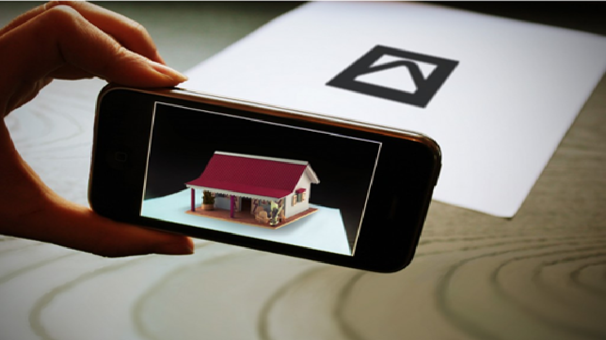

CHAMPIONS
TEAM PROFILE
Fisseha Abate
Student number: s3850910
Ideal Job: Web Development
My name is Fissehatsiyon Abate. My friends call me Fisseha, as my full name is apparently excessively lengthy and somewhat difficult to pronounce, according to them. I was born in the capital of Ethiopia, Addis Ababa. I grew up there until the age of 12 before coming to Australia in late 2014. I can fluently speak two of the eighty languages in Ethiopia. Those I speak are Amharic and Ge'ez. The first five years of my stay in Australia were in Adelaide, South Australia. I recently moved to Melbourne with my family after completing Highschool. I have so far enjoyed the couple of months that I have been here in Victoria. As most Ethiopians are, I am a big follower of Soccer. Although I do not do much playing these days, I passionately support Manchester United F.C. which is a club in England's top soccer league. I also do a lot of drawing and painting in my spare time which I at one-point thought was going to be the career I would pursue. Even though I have not done a lot of artwork, I still consider myself an artist. One rather interesting fact about myself is that I'm one of the 5% of the world's population who does not experience headaches.
Aisha Begum
Student Number: S3854403
Ideal Job: Cyber Security Analyst

My name is Aisha Begum, I am from India. We migrated to Australia when I was 10 years old, at home we usually speak in Hindi. An interesting fact about me is that i can speak around 4 languages Hindi, Urdu, English, and Punjabi. I have completed grade 5 in India and then continued my studies in Australia. I completed year 12 last year, and now I am studying Bachelors of Information Technology, at RMIT. I choose to study IT because of my passion for learning about the way the computer system works and how it allows us to work effectively.
Kevin Nguyen
Student Number: s3657016
Ideal Job: Business/Systems Analyst

I am 100% Vietnamese, born and raised in Melbourne's West. As of now, I have only completed my secondary education moving onto completing my tertiary education with the bachelors of Information Systems, outside of school I love to play volleyball as frequently as I can.
Christodoulos Voulismas
Student Number: s3850105
Ideal Job: IT Operations Manager

My name is Christodoulos Voulismas but most people call me Chris.My student number is s3850105 and my email is chrisvoulismas@gmail.com. I was born in Greece and i lived there for 18 years. I graduated from high school last year and i speak greek and english fluently. Also i am very good at basketball and i enjoy playing because i used to be in a greek team for 7 years.
Kyle Wilkinson
Student Number: 3836778
Ideal Job: Frontend Developer
I was born in Australia and have never been outside the country. I grew up in a small town by the name of Drouin, finished my VCE at the local high school and begun a bachelor of IT at Federation University, After a year and a bit of work, I had to leave. I applied for RMIT and began studies the next year. I now live in a sharehouse with like-minded individuals, study full time and work 4 days a week at Bunnings.
I spend the bulk of my time working and studying and in my downtime I enjoy building recycled furniture, enjoying and creating music and spending valuable time with friends.
Champion Test Outcomes
| Name |
Myers-Briggs Test |
Learning Style |
Test of personal choosing |
| Fisseha Abate |
Adventurer - INFP-T |
Visual Learner |
Creativity Test Score: 7/10 |
| Aisha Begum |
Mediator - INFP-T |
Visual Learner |
Big Five Excel in Agreeableness and Conscientiousness |
| Kevin Nguyen |
Entrepreneur ESTP-T |
Kinesthetic Learner |
Big Five Excel in openness and agreeableness |
| Christodoulos Voulismas |
Protagonist ENFJ-T |
Auditory Learner |
Creativity Test Score: 43 |
| Kyle Wilkinson |
Campaigner - ENFP-T |
Auditory Learner |
Abstract cognitive Test. 8/10 (High) |
Industry Data
IT Work
IT Technologies
Cloud Computing
Augmented Reality
What does it do?
Many people believe that virtual reality and augmented reality are the same, but they are wrong. In virtual reality the person experiences a stimulated world and in augmented reality the person experiences computer generated information that enhance reality, such as sounds, videos and graphics. AR, even though sounds futuristic, has been around for years. Augmented reality as a term started from 1990. Nowadays, because of the rapid development in technology, people have started to use AR more. Many use AR every day without even knowing, for example snapchat and Instagram filters. Also augmented reality is very well known in gaming. A very popular game named “Pokemon GO” released by Niantic, is based on AR. Soon, because of the rapid development in technology, AR will improve even more. It will be used frequently to improve and make life easier. People will use AR for many reasons, like writing something on a board that will pop up on the wall using your mobile phone or even wearing some type of special glasses that will help you see a movie on the wall just like a projector. Another example is industrial design. Companies that sell furniture can develop an app that lets you place the furniture in your house with augmented reality to check the dimensions of the furniture and also see if you like the colour.

Eventually AR will be used even in education, there can be interactive boards accessed with a mobile phone or with some special glasses, for maths physics or chemistry. AR could be used in healthcare aswell. For example in diagnosing and monitoring patients. Another way it can be used is in military for advance navigation and marking objects in real life saving them time and making things easier. Also AR could be used in art, for example visual paintings and music.
In order for all of these to happen there has to be some sort of device that will let the user interact with AR. This can be achieved with mobile devices and AR glasses also called smart glasses. These devices are already being used. For example most of the people have a mobile phone or a tablet. Many smartglasses have been released such as Google Glass but still there is a lot of improvement that needs to be done. Companies are also working on making smart lenses taking augmented reality one step even further. Manufacturers like Samsung and Sony are working in the development of AR lenses. Another project that is being developed is Virtual Retinal Displays(VRD) which will create bright and high resolution images by projecting laser light into the human eye. Gaming could also change a lot and take it to another step with AR and let the user interact with the game even more.
What is the likely impact?
In the near future things will start to drastically change with technology. AR will be used almost everywhere. It will make life easier for everyone. People will be able to use AR on a daily basis even in their jobs. It will help people be more efficient on what their doing. For example if someone wants to save something by writing it on a piece of paper it would be easier for him to use AR and just write it on a paper that will pop up on his wall using his mobile phone or smart glasses, and then save it. Then if he one day wants to see what he has written on that paper he could just check his saved files rather than looking to find a paper. This technology will affect the younger generation more since they are the ones who use technology more. It will be hard for older people to get used to AR and learn how to use it. In my opinion, I don’t belive that AR is going to replace people in any job but instead create new jobs. People who will be able to create or use any AR apps will be very demanding from big manifacturers.
In my daily life AR will affect me in a positive way. Since I like technology and I find interesting learning new things, AR will be great for me. I have always seen on movies and videos people using AR or some type of holograph and I always found that astonishing. It would be very nice if I could just talk to my friends or someone in my family with a holograph and feel like they are in the same room with me. Just by wearing smart glasses I will be able to pop up a list infront of me and see my to do list. Also I believe it will affect my family and my friends in a positive way too. It will help them all in different ways. They will be able to watch videos or check the news while doing something else just by wearing some special machine on their heads. They will also be able to play games based on AR or call someone and their face will float infront of them while they have gone for a walk, just like the movies. As the time goes by, im sure AR will improve rapidly and new features will come out.AR will change a lot of things and also the way people live. It will make life easier and also help many people be more eficient in their jobs.
Blockchain and cryptocurrencies
Kevins tech ;)
PROJECT IDEAS
This Home Security System works simple, this system recognises the users with their fingerprints and their voices they will have to be registered before they can have access to the system. The doors do not have handles and the user do not need to carry a key to be able to unlock the door, the user can unlock using their fingerprints. After entering they can also be recognised as they speak for example if they would like to check the cameras all they have to say is “Access Cameras” and the system will automatically turn on the TV and you would be able to check the cameras, this could be accessed in many different languages.
To able to allow guests to enter the house, any registered members could say “Grant Access” to allow them to enter the house or they can scan their fingers from inside the house and the door will open. However, before opening the door the system will scan if a person is safe to enter you will hear “Access Granted” after scanning has completed and the door will open (this would take about 20 – 30 sec) however if they are carrying any sort of weapons or are unsafe you will hear “Access Denied” and the alarm will be turned on automatically after 20 seconds meanwhile the system would show you why it has blocked access, however, if you think it’s an error and you would like the person to enter you would be able to allow access from inside the house by stopping the alarm and giving access.
While Parents are away they can check on their children easily just by texting on the security app which will be linked to the security system all they have to do is to text “what is everyone in the house doing” the application would reply by checking the sensors that are in use for example “ they are 5 people in the house 2 people are detected in the study room and the rest of them are in the living room.
Parents can also give a message to all their children present in the house at once they do not have to individually call each one of them to inform them. On the app they can message saying “a message for family” and then they can either video record, audio record or just text (the system will read it out to everyone). An example for video/audio message “A message from ___ playing audio/video” for a text is “___ has sent a message saying “……”” the listeners can re-listen to a message as many time as they want, messages will be deleted after 24 hours a message could be saved by any registered member using the app, they will have private access to the message.
The likely problems users may face are caused due to loss of power and Wi-Fi, as the system is electronic we need to make sure that the users can enter and exit the house in any circumstances, the huge concern is to make sure that only registered members can enter even if there is no power. As the system can't work during a power outage, we concluded that a Backup Battery is the best option for the user to continue using the app, as it will provide power to the system when the primary source of power is unavailable.
Furthermore, the problems user could face may include registering newborn, people with disabilities, and people with special needs into the system, this could be solved by providing the users to use other biometric Authentication such as voice recognition and face recognition. Newborn could be registered as a dependent under parents or other registered members, the dependant users will have to enter and exit the house with an independent user.